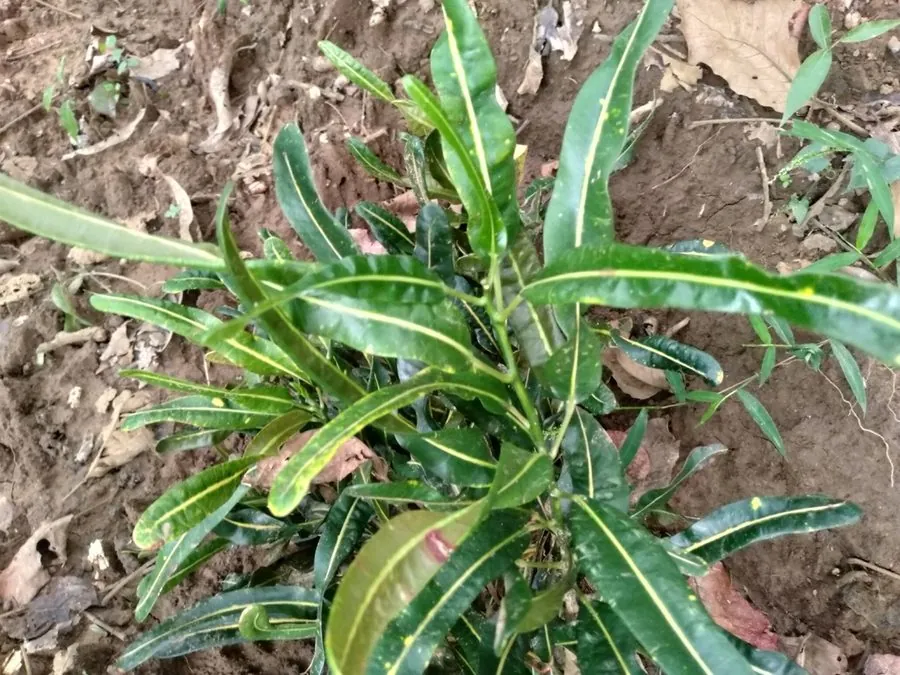

灌木与花木 · 植物界
变叶木 Codiaeum variegatum

热带常见的常绿灌木，叶片形状与色彩变化极多，有红、黄、橙、绿等斑纹，是南方园林与室内观叶的名贵植物。
- 分类
- 门被子植物门纲木兰纲目金虎尾目科大戟科属变叶木属
- 栖息环境
- 海拔 800 米以下的热带地区，喜高温多湿、光照充足
- 地理分布
- 原产马来西亚、印度尼西亚至澳大利亚北部，中国华南地区栽培
- 保护级别
- 暂无评估；中国未列入国家重点保护野生植物名录
物种志
变叶木为常绿灌木，高可达 2 m，全株含白色乳汁；叶片互生，形状多变，有线形、披针形、卵形或分裂状，叶面有红、黄、橙、绿、白等色斑纹，有的品种叶片扭曲或呈螺旋状，是观叶植物中叶形叶色变化最丰富的种类之一。花期 9–10 月，总状花序腋生，花小、黄绿色，雌雄同株；蒴果球形，成熟时开裂。
变叶木原产马来西亚、印度尼西亚至澳大利亚北部等热带地区，中国广东、广西、福建、海南、云南等地栽培，喜高温多湿、光照充足，适宜疏松肥沃、排水良好的酸性土壤，不耐寒。因叶色斑斓、叶形奇特，常被用于南方庭院、公园与花坛造景，北方多作室内盆栽观叶；园艺品种极多，有“洒金榕”“螺旋叶”等类型。变叶木的乳汁有毒，接触皮肤可能引起过敏，误食会中毒，栽培与修剪时需注意。
形态与习性
- 株高可达 2 m，全株含白色乳汁
- 花期9–10 月，花小、黄绿色
- 果期11–12 月，蒴果球形
- 光照喜光，光照充足时叶色更艳
- 水分喜湿润，怕积水
- 土壤疏松肥沃的酸性壤土
- 主要用途庭院与室内观叶、花坛造景
趣味知识
- 变叶木的叶片形状与色彩变化极多，有的呈线形，有的扭曲如螺旋。
- 变叶木在光照充足时叶色更鲜艳，光照不足则斑纹变淡。
- 变叶木全株含白色乳汁，乳汁有毒，修剪时需避免接触皮肤与眼睛。
- 变叶木原产东南亚热带地区，北方多作室内盆栽观叶植物。